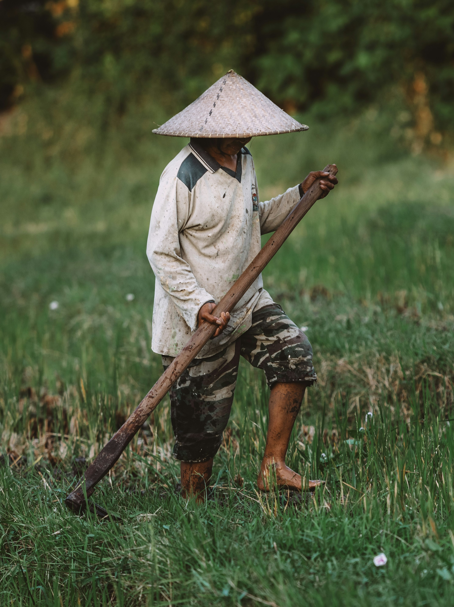

Wilderness survival environments vary widely, each presenting unique challenges and resources. Forests offer dense vegetation and potential for foraging but can be difficult for navigation and may have limited water sources. Deserts are characterized by extreme temperatures and scarce water but may provide edible plants and wildlife. In mountainous regions, the terrain can be rugged with varying weather conditions, while tundras present cold climates and limited vegetation but may offer some game and fish. Coastal areas provide abundant marine resources and milder temperatures but can expose you to high winds and saltwater. Swamps and wetlands offer rich biodiversity and water sources but can be challenging due to muddy terrain and insects. Adapting your survival strategies to these specific environments enhances your chances of success.
- Forest:
Find Water: Look for streams, rivers, or collect rainwater. Use condensation from leaves if needed.
Build Elevated Shelter: Keep dry and warm with a shelter made of leaves and branches.
- Swamp:
Quicksand: Move slowly and use logs to avoid sinking.
Purify Water: Boil or filter swamp water before drinking.
- Ocean:
Signal for Help: Use mirrors, flares, or bright cloths to attract attention.
Stay Hydrated: Collect rainwater and avoid drinking seawater.
- Island:
Find Fresh Water: Look for streams or collect rainwater. Avoid saltwater.
Build Shelter: Use palm leaves or driftwood to protect from sun, wind, and rain.
- Tundra:
Stay Warm: Wear layered, insulated clothing and build shelters with snow or natural materials.
Avoid Frostbite: Keep exposed skin insulated and dry.
- Mountains:
Acclimate Gradually: Adjust to higher altitudes slowly to prevent sickness.
Prepare for Weather: Carry layered clothing for sudden weather changes.
- Desert:
Stay Hydrated: Drink and ration water carefully. Collect rain if possible.
Seek Shade: Avoid exertion during the heat and use shelters to protect from the sun.
